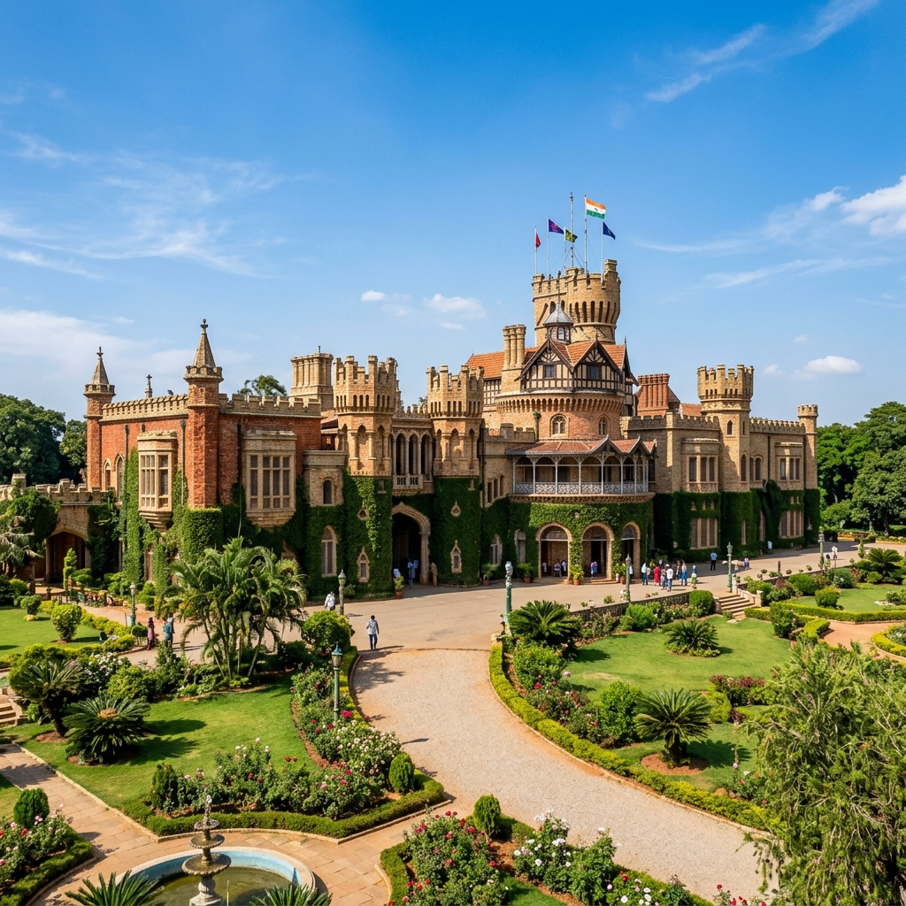
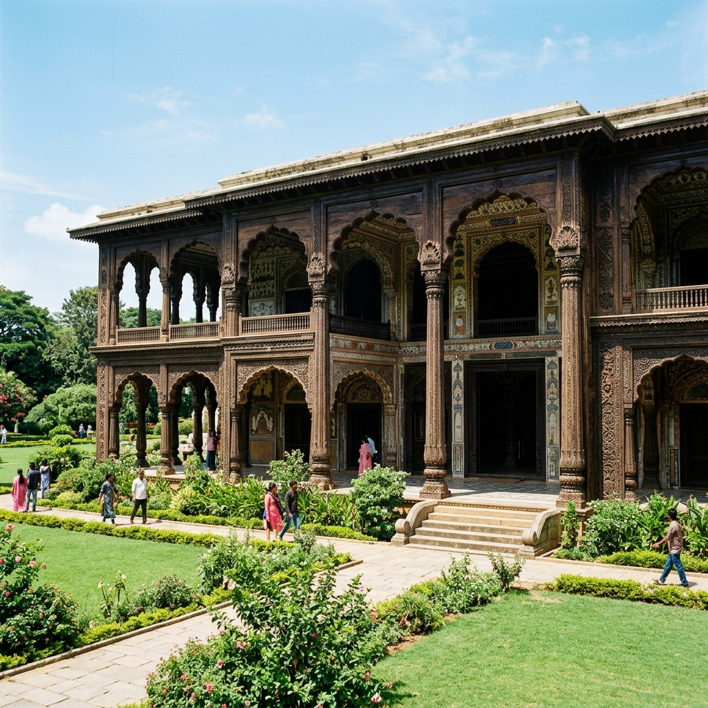

Historic Places & Monuments
Click any landmark card below to open an interactive view with multiple photos, history, timings, and visiting details.

Royal HeritageBangalore Palace
Tudor-style royal residence featuring grand towers, wooden carvings, ballrooms, and palace gardens.
View Details & Gallery →
Indo-IslamicTipu Sultan’s Summer Palace
Famous teakwood palace with fluted pillars, cusped arches, and detailed floral ceiling frescoes.
View Details & Gallery → Ancient Fort
Ancient Fort
Bengaluru Fort & Gate
Historic stone ramparts and gate dating back to the city's founder Kempe Gowda and Hyder Ali.
View Details & Gallery → Botanical Landmark
Botanical Landmark
Lalbagh Heritage Park
Royal botanical garden with a Victorian Glass House modeled after London's Crystal Palace.
View Details & Gallery →